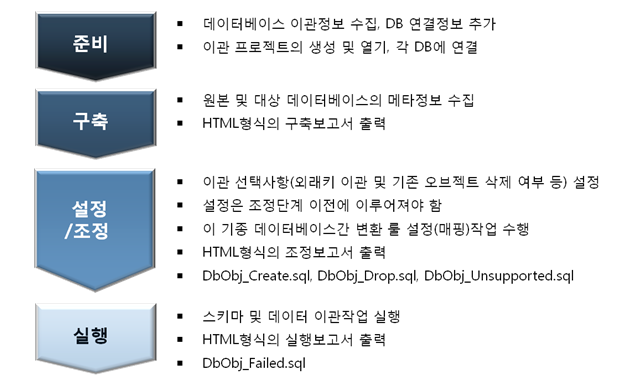
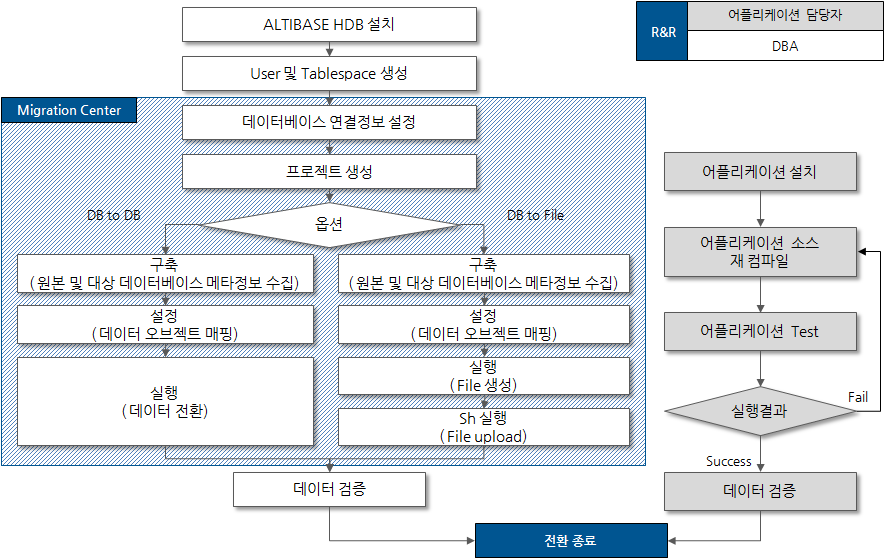
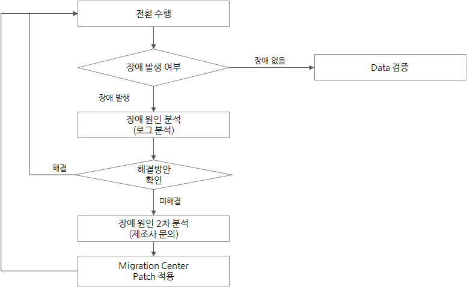
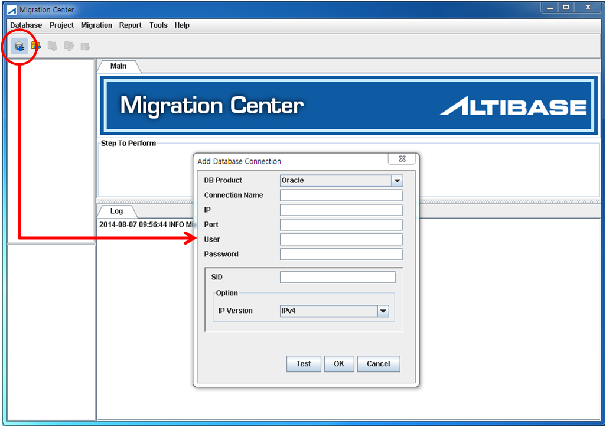
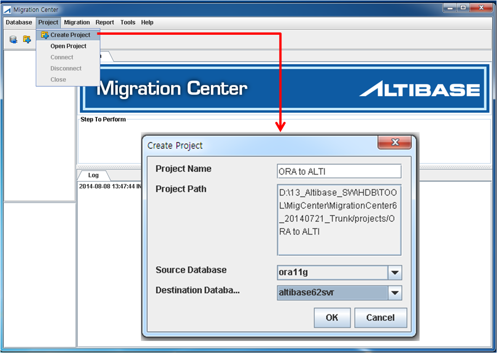
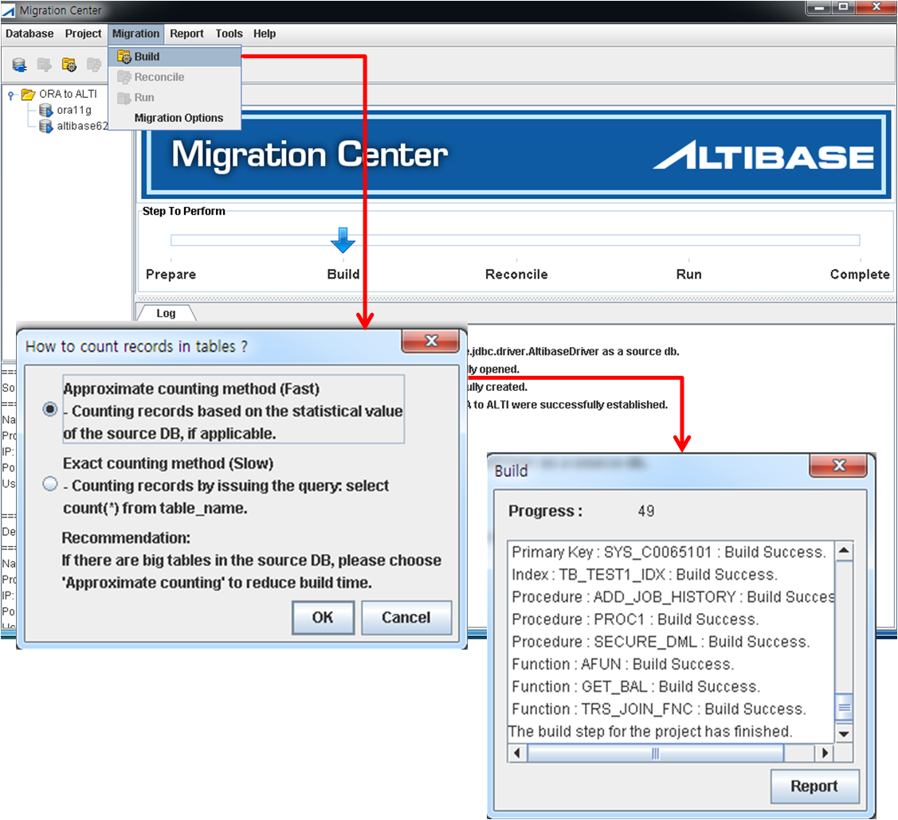
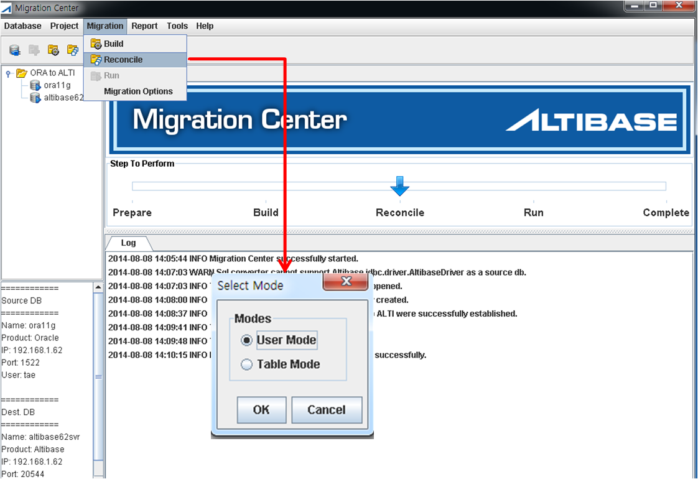
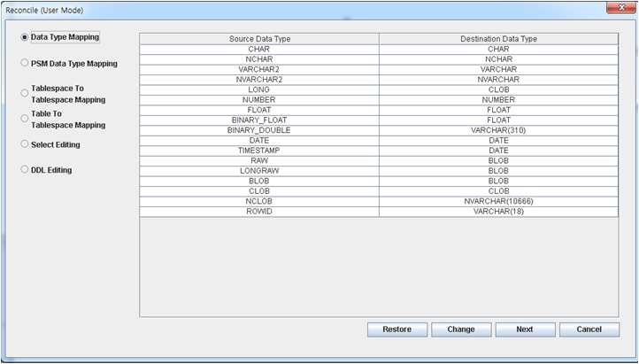
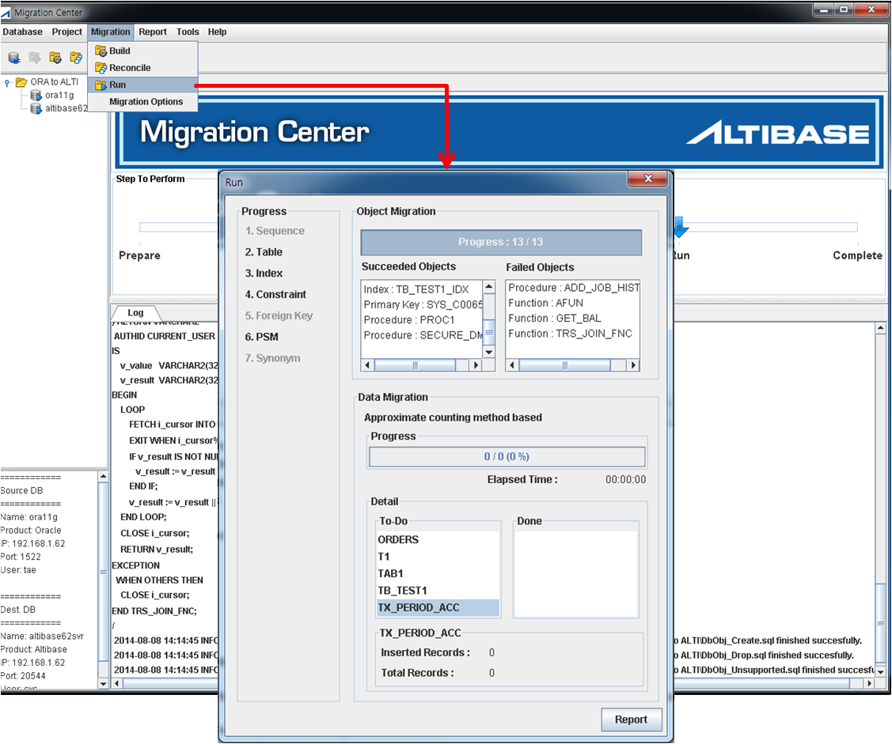
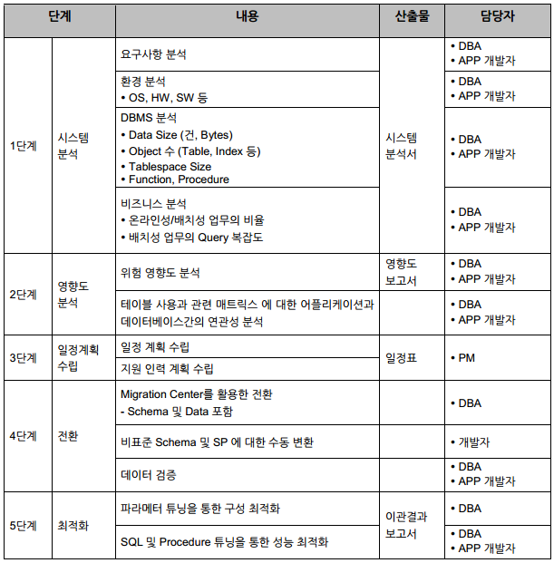

데이터의 전환 작업을 위해 자동화된 Migration Center라는 도구를 사용합니다.
전환 작업이 진행되기 이전에 맵핑 작업을 위하여 이전 DBMS에서 사용하는 환경에 맞게 user생성 과 Tablespace 생성이 필요합니다.
특정 DB 종속적인 기능이 적용된 경우에는 수동 변환 작업을 수행합니다.

DATA 전환 및 APPLICATION 작업 절차

DATA 정합성 확인
APPLICATION 검증 |
검증 방안 도출 |
|---|---|
DATA검증 |
Migration Center Report |
DATA 전환 장애 대처 방안

전환 도구
MIGRATION CENTER
1) Migration Center 이점
GUI기반의 툴로 손쉽게 사용이 가능
CLI 모드 지원으로 이관작업의 손쉬운 실행과 높은 성능
스키마와 함께 데이터도 모두 한 번의 조작으로 이관수행
서로 다른 데이터 형식에 대한 매핑작업을 통해 이관작업 수행
유연한 데이터 이관을 지원하기 위하여 사용자 정의 형식 지원
전환 결과에 대한 단계별 요약 보고서 제공
2) 사용법
(1) Add Database Connection
Source/Target DBMS의 정보를 입력합니다.
Connection Name : 임의 지정 가능
IP : DBMS Server IP
Port : DBMS Server Port
User : 연결 사용자 계정
Password : 연결 사용자 비밀번호
SID : 서비스 명
IP Version : IPv4/IPv6

데이터베이스 접속을 위해 JDBC 드라이버를 사용하므로, 원본 데이터베이스와 대상 데이터베이스에 알맞은 JDBC 드라이버를 준비하는 것이 중요합니다. 사용자 편의를 위해 지원되는 데이터베이스에 적합한 몇 가지 JDBC 드라이버를 Migration Center와 함께 제공합니다.
(2) Create Project
데이터 이관에 대한 프로젝트를 생성합니다.
Project Name : 임의 지정 가능
Project Path : 자동 생성
Source Database : Oracle
Destination Database : Altibase

(3) Build Project
Source Database에서 테이블의 레코드 개수를 가져오는 방식(Fast/Slow)을 선택하고 진행합니다.

(4) Reconcile Project
마이그레이션 수행 방법을 정의하는 단계로 마이그레이션 과정에서 가장 중요한 단계입니다.
User Mode : Source Database 생성시 정의한 사용자 계정이 접근할 수 있는 모든 Table과 모든 데이터를 마이그레이션 대상으로 정의
Table Mode : Source Database 생성시 정의한 사용자 계정이 접근할 수 있는 모든 Table 중에서 데이터를 마이그레이션 대상 Table을 선택 정의

Data Type Mapping : Oracle과 Altibase의 데이터타입 매핑
PSM Data Type Mapping : Oracle PL/SQL과 Altibase PSM 의 데이터타입 매핑
Tablespace to Tablespace Mapping : Oracle과 Altibase의 테이블스페이스 매핑
Table to Tablespace Mapping : Altibase의 테이블을 저장할 테이블스페이스 지정
Select Editing : Oracle 데이터 조회 조건 추가/수정
DDL Editing : Altibase의 최종 DDL 수정

(5) Run Project
데이터 마이그레이션을 수행합니다.

(6) PL/SQL Converter Tool
파일로 저장된 Oralce PL/SQL을 Migration Center를 이용하여 데이터 타입에 대한 sytax를 변경합니다.
비즈니스 로직에 대한 변경은 자동 변환되지 않으므로, 비즈니스 로직을 구현한 개발자가 수동으로 변환해야 합니다.

{kind=link}
{kind=link}
{kind=link}
{kind=link}
{kind=link}
{kind=link}
{kind=link}
{kind=link}
{kind=link}
{kind=link}
{kind=link}
{kind=link}